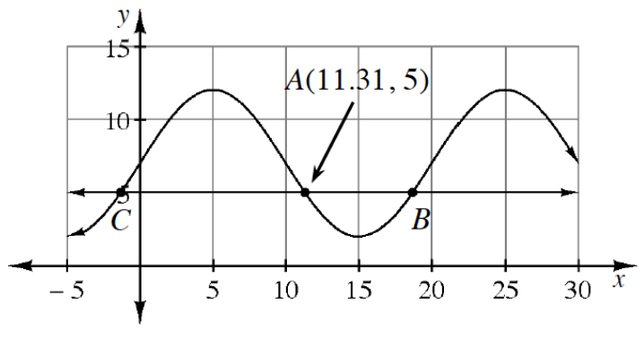

Each logarithmic equation can be rewritten as an equivalent exponential equation, and vice versa. Copy each equation shown below, then rewrite it in the other form.
\(y=x^7\)
\(\log_4(x)=y\)
\(e^x=x\)
\(w^x=n\)
\(K=m(b)^y\)
\(\log_{10}(p)=Q\)
Without a calculator, solve each of the following logarithmic equations. Write your answers in exact form.
\(\log_5(x)=2\)
\(\ln(-12)=x\)
\(\ln(x)=6\)
\(\log_2(8)=4\)
Bacteria can multiply at an alarming rate when each bacterium splits into two new cells, thus doubling. If a single bacterium is discovered at 9 a.m. and doubles every hour, how many bacteria will there be at the end of the day (midnight)? Write an equation and show the calculations that represent this situation.
Solve for a and b: \(42=ab^6\)
\(1.5=ab^2\)
At right is a graph of a periodic function and the line y = 5. One of the intersection points is (11.3, 5).

What is the period of the function?
Use the symmetry of the graph to state the coordinates of the intersection labeled as point B.
What are the coordinates of point C?
Usually, Dolores has to stock the shelves by herself and it takes her 7.2 hours. Today Camille helped Dolores and they were able to finish the task in 2.8 hours. How long would it have taken Camille if she were working alone?
Locate all asymptotes and/or holes on the graph of the function \(f(x)=\frac{x^2+2x-16}{x^2-4x-5}\).
The area under the curve \(f(x)=3x^2+1\) on the interval from x=1 to x=3 is to be approximated using ten left endpoint rectangles.
Write the sigma notation that would calculate the area.
Modify your answer in part (a) to calculate the area using right endpoint rectangles.